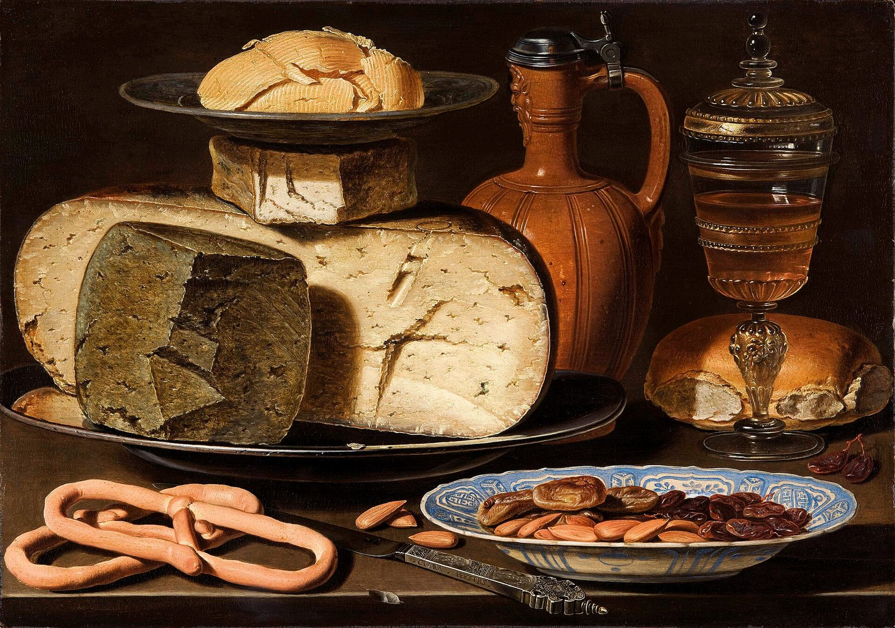
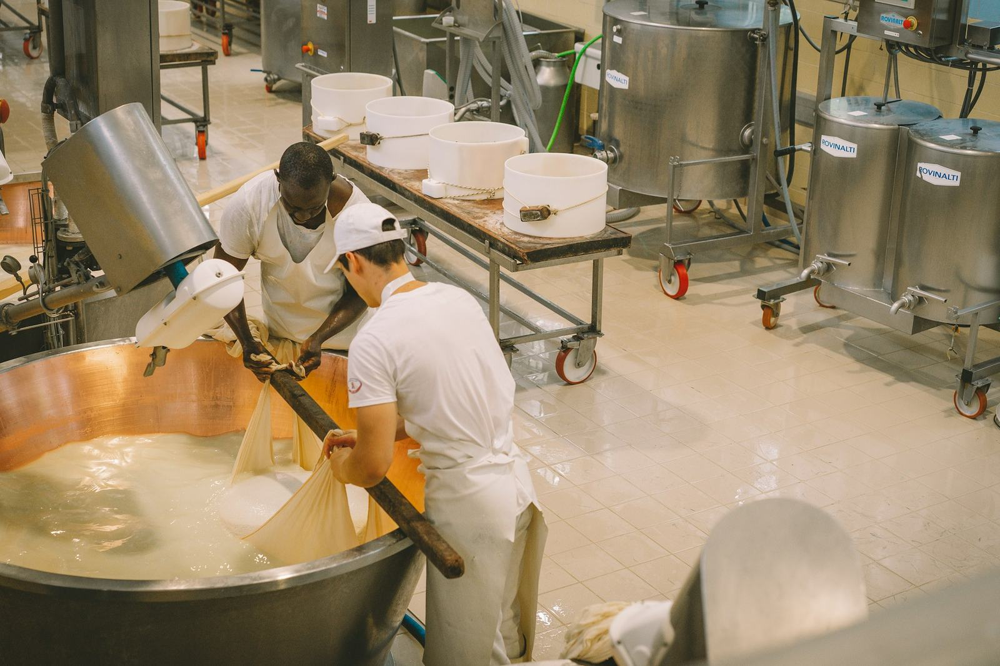
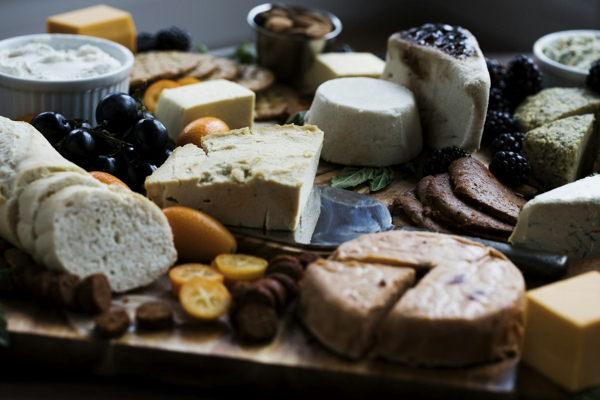
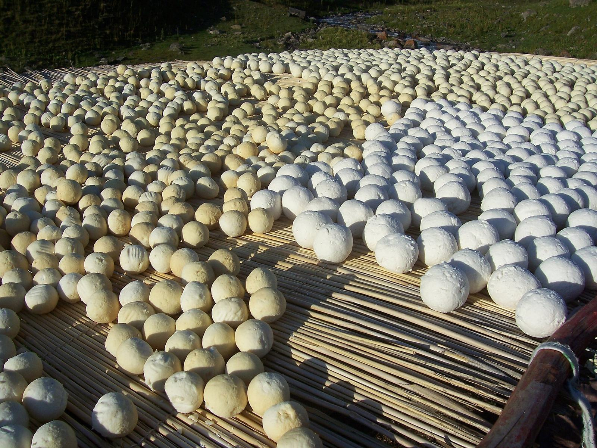
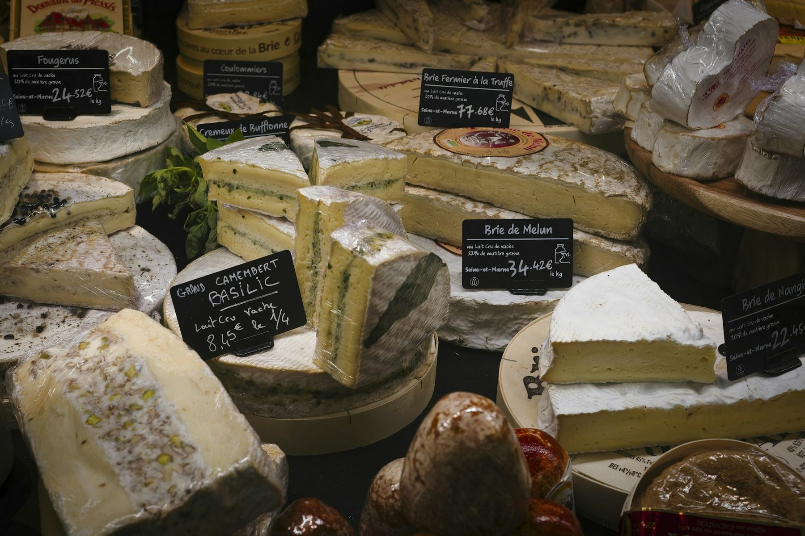

七千年：把夏天的奶留到冬天Seven thousand years of keeping summer milk for winter
奶酪的历史，就是「怎样让奶多活几个月」的历史：陶滤器和胃袋，荷马的柳条筐，罗马士兵的口粮，修道院和国王的特许状，荷兰的过磅房，纽约州的第一家奶酪工厂，再到法定产区和手工复兴。往下滚，或者拖底部的刻度尺。The history of cheese is the history of making milk last a few more months: clay sieves and stomach bags, Homer’s wicker baskets, Roman army rations, abbeys and royal charters, Dutch weigh-houses, New York’s first cheese factory, and then protected origins and the artisan revival. Scroll, or drag the ruler at the bottom.
东边的酪、酥与奶片Lao, su and milk fans in the East
乳品在东亚不只是「舶来品」。下面是中国、蒙古、西藏、日本和印度的几条线索，点开看。Dairy in Asia is not only an import. A few threads from China, Mongolia, Tibet, Japan and India — tap to open.

做一块奶酪：同一锅奶，十个旋钮Make one: one pot of milk, ten dials
所有奶酪都从一锅奶开始，走差不多同样的十步：选奶、加热、加菌、点凝乳酶、切、煮、排乳清、成型、加盐、熟成。差别只在每一步拧多大——温度高几度、凝乳切多小、盐水泡几天、在洞里放多久。左边挑一种，按播放，看它一步步变成自己。Every cheese starts as a pot of milk and goes through roughly the same ten steps: milk, heat, culture, rennet, cut, cook, drain, form, salt, ripen. What differs is how far each dial is turned — a few degrees hotter, a smaller curd, more days in brine, longer in the cave. Pick one on the left, press play, and watch it become itself.
选一种奶酪Pick a cheese
温度、时间、pH 优先取自各奶酪的原产地规范（PDO / AOP / PGI）；规范没写的，取自大学教材与行业资料，个别为通行做法。表里的「—」是规范和资料里都没有给数。熟成时间尺是对数刻度：一格是十倍。Temperatures, times and pH come first from each cheese’s protected-origin specification (PDO / AOP / PGI); where the specification is silent, from university textbooks and industry sources, occasionally from common practice. A “—” means no figure was given. The ageing scale below is logarithmic: each step is ten times longer.
熟成：从一天到三年Ageing: from one day to three years

品鉴：一张光谱、一圈风味、一桌搭配Taste: a spectrum, a wheel, a board
尝奶酪不必背术语：先回温，从淡到浓，看、摸、闻、尝。下面把 28 种常见奶酪摆在「风味强度 × 软硬」的光谱上——点几种，排出你们自己的一组；再用风味轮找词，用搭配表找酒、啤酒、苹果酒和茶。Tasting cheese needs no jargon: let it warm up, go from mild to strong, then look, touch, smell, taste. Below, 28 common cheeses sit on a spectrum of intensity against firmness — tap a few to build your own flight; then use the wheel to find words and the pairing list to find wine, beer, cider or tea.
先学会怎么吃First, how to eat it
从冰箱取出约 1 小时再吃，冷会压住风味；白霉等软质奶酪至少 1 小时，硬质约半小时。Take cheese out of the fridge about an hour before eating, because cold dulls flavour; mould-ripened soft cheeses at least an hour, hard cheeses about half an hour.
孔泰行业协会建议在 15–18°C 品尝。The Comté interprofession recommends tasting at 15–18 °C.
鲜山羊奶酪或可涂抹的鲜奶酪 → 白霉软质（布里、卡芒贝尔）→ 洗皮或自然皮半软 → 紧实陈年（切达、羊奶托姆、高山奶酪）→ 最后蓝纹。Fresh chèvre or spreadable cheese → bloomy rind (Brie, Camembert) → semi-soft washed or natural rind → firm aged (Cheddar, sheep tomme, Alpine) → blue last.
先看外皮与内里（判断欠熟或过熟），轻按感受软硬，闻有无异味（味重不等于坏），再切一块从中心到外皮、慢慢咀嚼。Check rind and paste for under- or over-ripeness, press gently for firmness, sniff for off-notes (strong is not necessarily bad), then cut from centre to rind and chew slowly.
软滑、奶油、坚硬还是脆；苦、咸、酸、甜还是果香；最后留意吞下后的回味。英国切达匠人 Mary Quicke 把好奶酪在口中逐层展开的过程称为「风味的阶梯」。Note texture, basic tastes and the finish: soft, creamy, hard or crisp; bitter, salty, sour, sweet or fruity; then the aftertaste. Cheddar maker Mary Quicke calls the slow unfolding of a good cheese a 'staircase of flavours'.
品鉴时每人每种约 1–2 盎司（约 30–60 克），一次 3–5 种为宜。About 1–2 oz (≈30–60 g) per person per cheese, with 3–5 cheeses per tasting.
两种奶酪之间喝水、吃一片苹果或原味饼干。Cleanse between cheeses with water, a slice of apple or a plain cracker.
外皮能不能吃先闻一闻，气味讨喜再尝；硬奶酪用锋利的刀，软奶酪常用勺子更顺手。孕妇或免疫力低下者应避开生乳奶酪。Sniff the rind and taste it only if the smell appeals; firm cheeses need a sharp knife, soft ones are often easiest with a spoon. Pregnant or immunocompromised guests should avoid raw-milk cheeses.
品鉴光谱Tasting spectrum
位置是按家族、熟成时长和含水量做的估计，不是哪一张公开的品鉴图表；同一种奶酪，不同产家、不同月份会差很多。点圆点看介绍，再点「加进一组」。Positions are estimates from family, age and moisture, not taken from any published tasting chart; the same cheese varies a lot by maker and month. Tap a dot for notes, then “Add to tasting flight”.
风味轮Flavour wheel
搭配：按类别找Pairing, by kind
清淡的奶酪配清淡的酒，浓重的奶酪配浓重的酒，谁也别盖过谁。Wine Folly 的经验线：酒精度 14.5% 以上的酒配浓味奶酪，12% 以下配清淡奶酪。Delicate cheese with delicate drinks, bold with bold, so neither overwhelms. Wine Folly's rule of thumb: wines above 14.5% ABV for intense cheeses, below 12% for delicate ones.
奶酪越熟越干、相对越油润，脂肪能抵消重单宁红酒的干涩；感官实验表明「涩」与「油润」是一对相互抵消的感觉。As cheese ages it becomes drier and relatively fattier, and that fat counters drying tannins; sensory experiments show astringency and fattiness are opposing sensations that offset each other.
甜型酒（波特、苏玳、晚收、莫斯卡托）或蜂蜜、果酱，与咸而浓烈的蓝纹或洗皮奶酪形成对比；酒越甜，可配的奶酪越强。经典例子是斯蒂尔顿配波特、洛克福配苏玳。Sweet wines (Port, Sauternes, late-harvest, Moscato), honey or jam contrast with salty, pungent blue and washed-rind cheeses; the sweeter the wine, the stronger the cheese can be. Classic: Stilton with Port, Roquefort with Sauternes.
起泡酒、高酸白葡萄酒、带气的啤酒或苹果酒能「切开」软质奶酪的黏腻脂肪，避免味觉疲劳；苦味（啤酒花）也有同样作用。Sparkling wine, high-acid whites, carbonated beer or cider cut through the sticky fat of soft cheeses and prevent palate fatigue; hop bitterness does the same.
同乡搭配（grows together, goes together）：同一产区的奶酪与酒往往经过几代人的磨合，是最稳妥的起点——如卢瓦尔河山羊奶酪配长相思、勃艮第埃普瓦斯配霞多丽、汝拉孔泰配黄葡萄酒（Vin jaune）。Regional pairing ('grows together, goes together'): cheeses and drinks from the same place have been matched over generations — Loire goat cheese with Sauvignon Blanc, Burgundy's Époisses with Chardonnay, Jura's Comté with Vin jaune.
坚果味奶酪配有坚果 / 焦糖调的酒或啤酒；咸鲜的老奶酪配略带苦味的果酱，苦味与奶酪残余的甜味形成反差。Bridge shared flavours (complement) or balance opposites (contrast): nutty cheeses with nutty or caramel-noted drinks; a salty, aged cheese with slightly bitter marmalade, whose bitterness plays against the cheese's residual sweetness.
加州大学戴维斯分校 2006 年让受训评审先吃 5 克奶酪再品红酒（8 种奶酪 × 8 款红酒），几乎所有奶酪都削弱了红酒的干果、橡木等香气以及酸度和涩感（莓果香也降低，但不显著），唯一被增强的是黄油香；各组合影响相似，作者认为「几乎任何奶酪都能配几乎任何酒」。In a 2006 UC Davis study, trained panellists ate 5 g of cheese before tasting red wine (8 cheeses × 8 wines); almost every cheese suppressed dried-fruit and oak aromas, sourness and astringency (berry dropped too, but not significantly), and only butter aroma increased. Effects were similar across combinations, and the authors concluded 'we should be able to enjoy almost any cheese with almost any wine'.
拿不准时选紧实、带坚果味的奶酪（格吕耶尔、孔泰、埃曼塔、高达）：脂肪足以柔化红酒单宁，又不会盖过白葡萄酒。茶也可以照酒的思路配：红茶单宁重如红葡萄酒，绿茶清淡如白葡萄酒。When in doubt, choose a firm, nutty cheese (Gruyère, Comté, Emmental, Gouda): enough fat to soften red tannins, delicate enough for whites. Tea follows wine logic: tannic black teas behave like reds, green teas like whites.

奶的其他活法Other ways to keep milk
奶酪只是人类存奶的一种办法。草原上把酸奶晒成石头一样的球，高原上把酥油封进皮囊，黎凡特把滤干的酸奶团成球泡进橄榄油，北欧和高加索让菌种在家里代代相传，爱尔兰人把黄油埋进泥炭沼泽。办法千差万别，原理却只有几条：发酵降 pH、去水、加盐、加糖、熬油封脂、烟熏、降温。Cheese is only one of the ways people keep milk. On the steppe yoghurt is sun-dried into stone-hard balls; on the plateau butter is sealed in hides; in the Levant strained yoghurt is rolled into balls and sunk in olive oil; in the Nordic countries and the Caucasus cultures are handed down at home; in Ireland butter went into the peat bog. The methods are endless, the principles few: ferment to lower the pH, remove water, add salt or sugar, render and seal in fat, smoke, keep it cold.
八条原理Eight principles
乳酸菌把乳糖变成乳酸，pH 降到约 4.5 以下，多数致病菌和腐败菌难以生长；先占满的乳酸菌还会争夺营养、产生细菌素，挤走杂菌。用上一批的「老引子」接种，就是把这群赢家代代传下去。Lactic acid bacteria turn lactose into lactic acid, dropping pH below about 4.5, where most pathogens and spoilage bacteria struggle; the established culture also outcompetes newcomers for nutrients and makes bacteriocins. Back-slopping from the previous batch passes the winning community on.
pH 降到 4.5 以下（kule naoto 实测）pH below 4.5 (measured in kule naoto)
酵母和乳酸菌一起工作，产生少量酒精、二氧化碳和乳酸；酒精与酸叠加抑菌，也消耗掉大部分乳糖。马奶乳糖高、酪蛋白少，特别适合做成低度奶酒。Yeasts working alongside lactic bacteria add a little ethanol and CO2 to the acid; alcohol and acidity together inhibit microbes and use up most of the lactose. Lactose-rich, low-casein mare's milk is especially suited to this.
酒精约 1.4–2.3%（乌兰巴托艾日格实测）About 1.4–2.3% alcohol (Ulaanbaatar airag)
微生物需要「可用的水」。水分活度（aw）低于约 0.90 多数细菌停止生长，低于约 0.61 酵母和霉菌也基本停下，低于 0.60 几乎没有微生物能繁殖。晒干的奶球、奶片、奶粉都是把 aw 压到这一线以下。Microbes need available water. Below a water activity (aw) of about 0.90 most bacteria stop growing, below about 0.61 yeasts and moulds largely stop, and below 0.60 almost nothing proliferates. Sun-dried curd balls, milk sheets and milk powder all push aw under that line.
aw<0.90 多数细菌停；<0.61 霉菌酵母停；<0.60 无繁殖aw<0.90 stops most bacteria; <0.60 stops all growth
盐溶在水里，把水「绑住」，降低水分活度，同时造成渗透压，让细菌细胞失水；盐还能在晒干过程中抑制过度酸化和杂菌。约旦 jameed 平均含盐约 15.7%。Dissolved salt binds water, lowering water activity, and its osmotic pressure pulls water out of bacterial cells; it also restrains excessive souring and stray microbes while drying. Jordanian jameed averages about 15.7% salt.
jameed 平均含盐约 15.7%Jameed averages about 15.7% salt
细菌只能在水相里生长。把黄油熬到几乎无水（ghee 含水约 0.2%）、滤掉蛋白质，剩下的纯脂肪里微生物无处容身；唯一的敌人变成氧化酸败，所以要密封、避光，或加香料抗氧化。反过来，用油（橄榄油）或脂肪把食物封住，也能隔绝空气。Bacteria live in the water phase. Boil butter until nearly dry (ghee holds about 0.2% water) and strain out the protein, and pure fat leaves microbes nowhere to grow; the remaining enemy is oxidative rancidity, held off by sealing, darkness or antioxidant spices. Conversely, covering food in oil or fat shuts out air.
ghee 含水约 0.2%Ghee holds about 0.2% water
把奶熬掉大部分水，再加上大量糖，溶质浓度极高，水分活度降到约 0.80–0.87，多数细菌无法生长；长时间加热同时杀菌，并通过美拉德反应带来焦糖色和香气。只浓缩不加糖（如 khoa）则保存期很短。Boil off most of the water and add lots of sugar, and solute concentration rises until aw falls to about 0.80–0.87, too low for most bacteria; the long heating also sterilises and, through Maillard browning, adds colour and caramel flavour. Concentration without sugar (khoa) keeps only briefly.
糖占水相 62.5–64.5%，aw 约 0.78–0.87（甜炼乳）Sugar 62.5–64.5% of water phase; aw ≈0.78–0.87
木烟里的酚类等化合物有抑菌和抗氧化作用，烟熏同时烘干表面；东非牧民用特定树木的炭火熏烤葫芦内壁，炭层还能封住葫芦的孔隙。Phenolic and other compounds in wood smoke are antimicrobial and antioxidant, and smoking also dries surfaces; East African herders smoke gourds with charcoal from chosen trees, whose coating also seals the gourd's pores.
低温让微生物和酶的活动变慢；泥炭沼泽低温、缺氧、偏酸，相当于天然冷库，使爱尔兰的沼泽黄油保存了数百到三千多年。草原和高原的冬季寒冷也是牧民储存黄油、奶块的帮手。Cold slows microbes and enzymes; peat bogs are cold, oxygen-poor and acidic — a natural cold store that kept Irish bog butter for centuries to over three millennia. Steppe and plateau winters likewise help herders store butter and curd.
沼泽黄油埋藏传统 ≥3500 年Bog-butter burials span 3,500+ years
二十三种别的存奶法Twenty-three other ways

站到奶酪柜前At the cheese counter
全食、Eataly 这类奶酪集中的专柜，第一次站过去容易发懵：几十块奶酪、一排看不懂的缩写、柜台后面还站着一位等你开口的人。其实柜子分几个区，价签上就那么几个词，要一片尝尝是再平常不过的事。下面从柜子里有什么、价签怎么读、怎么开口、怎么配一盘、拿回家怎么放，一路走到从 Daisy 家出发能去哪儿买。A dedicated cheese counter — Whole Foods, Eataly and the like — can be bewildering the first time: dozens of cheeses, a row of abbreviations, and someone behind the glass waiting for you to speak. In fact the case falls into a few zones, a tag uses only a handful of words, and asking for a taste is the most normal thing in the world. Below: what is in the case, how to read a tag, what to say, how to build a board, how to keep it at home — and where to go from Daisy’s place.
柜子里有什么What’s in the case
点一个区，看这一区常见的几种奶酪一磅大概多少钱；再点一条，看它什么味道、配什么。价格是 2026 年秋天按公开价和同级别零售价整理的区间，以店里的价签为准。Pick a zone to see what its usual cheeses cost per pound; tap a bar for taste and pairings. Prices are autumn-2026 ranges from public and comparable retail prices — the tag in the store wins.
读一张价签Read a tag
价签上的每个词都有讲究。换一张，点亮起来的词。这几张是按常见写法排的示例，不是哪家店的实价。Every word on a tag means something. Switch tags and tap the highlighted words. These are typical examples, not real prices from any store.
开口要一片Ask for a slice
柜台后面的人就是来帮你挑的。这十句够用了——点一张翻过来看意思。The person behind the counter is there to help you choose. These ten lines are enough — tap a card to flip it.
配一盘Build a board
选预算和人数，份量按比例算；钱数按每磅价格区间估算，只算奶酪。三盘都用全食常见的品种，每盘至少一种加州奶酪，当天有没有货以店里为准。Pick a budget and a head count; portions scale with it. Cost is estimated from the per-pound ranges and covers cheese only. All three use cheeses Whole Foods commonly stocks, each with at least one Californian; what is in on the day is up to the store.
从柜台到餐桌From counter to table
从 Daisy 家出发Starting from Daisy’s
圆心是 Daisy 家。方向按地址大致摆，远近按非高峰时段的路程估；最外一圈的 Eataly 在一小时外，图上压缩了。营业时间出发前看店家官网。Cowgirl Creamery 渡轮大厦的店 2021 年已经关了。Daisy’s place is at the centre. Directions follow the addresses roughly; distance is off-peak travel time. Eataly, on the outer ring, is an hour away and drawn closer than it is. Check opening hours before you go. Cowgirl Creamery’s Ferry Building shop closed in 2021.
卷末Notes
方法Method
研究分四路：沿革（考古与文献、东亚乳品、法规与名称之争）、工艺与风味（十步工序、十种奶酪的原产地规范、风味轮、搭配）、全球存奶法（二十三种做法与八条原理）、柜台导购（Whole Foods 与 Eataly、标签、旧金山的店）。数字优先取原产地规范（PDO / AOP / PGI）、美国联邦法规、学术论文与官方统计，其次是大学教材、行业协会与主要媒体；底稿里置信度「低」的事实一般不上正文。品鉴光谱的位置是按家族、熟成与含水量估计的；风味轮的结构来自 Bérodier 等（1997），具体词与化合物参考 Drake 等（2001）的切达词表，个别化合物为通行说法。柜台价格是 2026 年秋天按公开价与同级别零售价整理的区间，门店实价会变，以现场价签为准。页面写完后另做了一轮逐条核查。
Research ran in four strands: history (archaeology and texts, East Asian dairy, law and the fight over names); craft and flavour (the ten steps, protected-origin specifications for ten cheeses, the flavour wheel, pairing); other ways to keep milk (twenty-three practices, eight principles); and the counter (Whole Foods and Eataly, labels, San Francisco shops). Figures come first from origin specifications (PDO / AOP / PGI), US federal regulations, papers and official statistics, then from university textbooks, trade bodies and major media; low-confidence facts were generally left out. Spectrum positions are estimates from family, age and moisture; the wheel follows Bérodier et al. (1997), with words and compounds from Drake et al. (2001), a few compounds being common attributions. Counter prices are autumn-2026 ranges from public prices and comparable retailers; trust the tag in the store. The finished page was checked line by line.
仍待核实Still to verify
- 《齐民要术》作干酪法、《洛阳伽蓝记》「酪奴」与《涅槃经》五味的引文与通行校本一致，但这次没能在线打开全文逐字核对。The quotations from the Qimin Yaoshu, the Luoyang Qielan Ji and the Nirvana Sutra match standard editions but could not be re-read in full online.
- 菲达约 18°C 的预熟成取自 PDO 摘要的转述，希腊原文规范没有打开。Feta’s ~18 °C pre-ripening comes from a summary of the PDO; the Greek specification itself was not opened.
- The Cheese School of San Francisco 2026 年的地址与课表、Glen Park 的 Cheese Boutique 与 Dogpatch 的 La Fromagerie 的门牌，只有导览文章为据，出发前请看店家官网。The Cheese School of San Francisco’s 2026 address and schedule, and the street numbers of Cheese Boutique (Glen Park) and La Fromagerie (Dogpatch), rest on guide articles only — check before you go.
- 柜台价格是按公开价和同级别零售价整理的区间，全食与 Eataly 的门店实价没法在线取得。Counter prices are ranges from public and comparable retail prices; in-store prices at Whole Foods and Eataly could not be read online.
参考来源Sources (287)
- Evershed et al. 2008, Earliest date for milk use in the Near East and southeastern Europe linked to cattle herding, Nature 455:528–531
- Dunne et al. 2012, First dairying in green Saharan Africa in the fifth millennium BC, Nature 486:390–394
- Salque et al. 2013, Earliest evidence for cheese making in the sixth millennium BC in northern Europe, Nature 493:522–525
- Live Science: Holy Cow! First Cheesemakers Date Back 7,500 Years (2012-12-12)
- McClure et al. 2018, Fatty acid specific δ13C values reveal earliest Mediterranean cheese production 7,200 years ago, PLOS ONE 13(9): e0202807
- Paul S. Kindstedt, Cheese and Culture: A History of Cheese and Its Place in Western Civilization (Chelsea Green, 2012)
- Greco et al. 2018, Proteomic Analyses on an Ancient Egyptian Cheese and Biomolecular Evidence of Brucellosis, Analytical Chemistry, doi:10.1021/acs.analchem.8b02535
- Phys.org: World's oldest cheese found in Egyptian tomb (2018-08)
- Yang et al. 2014, Proteomics evidence for kefir dairy in Early Bronze Age China, Journal of Archaeological Science 45:178–186, doi:10.1016/j.jas.2014.02.005
- Max Planck Society: The mummy cheese
- Liu et al. 2024, Bronze Age cheese reveals human-Lactobacillus interactions over evolutionary history, Cell, doi:10.1016/j.cell.2024.08.008
- AZoLifeSciences: Metagenomic Study Reveals the Most Ancient Dairy Remains Known to Date (2024-09-26)
- The Microbiologist: World's oldest cheese found with ancient mummies reveals origins of kefir
- Homer, Odyssey 9.244–249 (A. T. Murray tr., Perseus Digital Library)
- Varro, De re rustica 2.11 (LacusCurtius)
- Columella, De re rustica 7.8 (Latin text, The Latin Library)
- Pliny the Elder, Natural History 11.97 (Bostock & Riley tr., Perseus Digital Library)
- Historia Augusta, Life of Hadrian 10.2 (LacusCurtius)
- R. W. Davies, The Roman Military Diet, Britannia 2 (1971), cited in Gutteridge, UCSB Undergraduate Journal of History
- Cahier des charges de l'AOP Roquefort (version consolidée 2006), eAmbrosia
- Emilia Delizia: The Origins of Parmigiano Reggiano
- Boccaccio, Decameron VIII.3 (Decameron Web, Brown University)
- r/AskHistorians answer on the 1170 Pipe Roll and Cheddar (2023), citing the Pipe Roll 17 Henry II
- Cheddar village: The History of Cheddar Cheese
- Interprofession du Gruyère: History
- Comté Cheese Association: 1,000 Years of Artisanal Cheesemaking (PDF)
- Kaasmarkt Alkmaar: History of the Cheese Market
- Waag (Gouda), Wikipedia (Dutch)
- Dutch cheese markets (encyclopaedia mirror)
- Silvano Romani: Parmigiano Reggiano story
- Daniel Defoe, A Tour thro' the Whole Island of Great Britain, Letter 7 (Vision of Britain)
- HMdb: Jesse Williams Historical Marker, Rome, NY (Oneida County, 1970): 'Jesse Williams in 1851 inaugurated the cheese factory system thus revolutionizing dairying.'
- Encyclopedia.com: Dairy Industry (Dictionary of American History)
- Chr. Hansen (now Novonesis): company history
- US Patent 1,186,524, J. L. Kraft, Process of sterilizing cheese and an improved product produced by such process (filed 1916-03-25, granted 1916-06-06), Google Patents
- The Courtyard Dairy: A History of British Cheese – The 20th Century and the Eradication of Farmhouse Production
- Imperial War Museums: What you need to know about rationing in the Second World War
- eCFR 21 CFR 133.113 Cheddar cheese
- INAO: 100 ans de l'appellation Roquefort
- Pleinchamp: Le roquefort célèbre 100 ans d'appellation
- WIPO Magazine (2011): Parmesan – The King of Cheeses
- Netherlands Treaty Database: International Convention on the use of designations of origin and names for cheeses (Stresa, 1951)
- Consorzio Pecorino Romano: 70 anni della Convenzione di Stresa (press release, 2021)
- Council Regulation (EEC) No 2081/92, EUR-Lex
- American Cheese Society: History & Archives
- Marin French Cheese Co.: About
- Laura Chenel: Our Story
- Cowgirl Creamery: About
- Point Reyes Farmstead Cheese Co.: Our Story
- USDA NASS, Dairy Products 2024 Summary (April 2025)
- IndexBox: Cheese – World Market Overview 2024
- AVM (Ukraine dairy analysts): Cheese trend, figures, facts
- J. H. Maryanski (FDA), FDA's Policy for Foods Developed by Biotechnology, in Genetically Modified Foods: Safety Issues, ACS Symposium Series 605 (1995)
- Vegetarian Resource Group: Microbial Rennets and Fermentation-Produced Chymosin (2012)
- Jeffrey Kotyk, Milk, Yogurt and Butter in Medieval East Asia: Dairy Products from China to Japan in Medicine and Buddhism, Religions 12(5):302 (2021)
- 贾思勰《齐民要术》卷六·养羊第五十七（维基文库）
- Chinese Knowledge and Poetry Medieval Library: Qimin yaoshu (table of contents incl. 養羊第五十七)
- 杨衒之《洛阳伽蓝记》卷三·城南·报德寺条（王肃「酪奴」事）
- J-milk 社会文化研究（2012）『涅槃経』「醍醐最上なり」引用
- Berkshire Encyclopedia of China: Milk and Dairy Products
- Xu, Shu & Zhang 2016, 乳扇贮藏期挥发性成分与感官属性的偏最小二乘回归分析, 现代食品科技 32(12):314–320
- Goldthread: Rubing, China's must-try deep-fried cheese
- 農林水産省「うちの郷土料理」：蘇（奈良県）
- Scroll.in: on chhena, Bandel cheese and the Portuguese in Bengal (citing K. T. Achaya, Chitra Banerji)
- Wikipedia: Paneer (history section, as a lead to Mathur, Kumar et al. 2011, Donnelly 2016)
- eCFR 21 CFR 133.165 Parmesan and reggiano cheese
- CURIA: Case C-132/05 Commission v Germany
- CURIA: Joined Cases C-465/02 and C-466/02 Germany and Denmark v Commission
- CURIA: Case C-159/20 Commission v Denmark
- Interprofession du Gruyère v. U.S. Dairy Export Council, No. 22-1041 (4th Cir. 2023), Justia
- eCFR 21 CFR 133.169 Pasteurized process cheese
- eCFR 21 CFR 133.195 Swiss and emmentaler cheese
- Brillat-Savarin, Physiologie du goût, Aphorisme XIV (Project Gutenberg #22741)
- The Physiology of Taste, English translation, Aphorism XIV (Project Gutenberg #5434)
- Cheese Manufacture (Chemical Processes in New Zealand, NZ Institute of Chemistry, ch. 3D)
- Cahier des charges de l'appellation d'origine « Camembert de Normandie » (INAO)
- Disciplinare di produzione della DOP Parmigiano Reggiano (Consorzio del Formaggio Parmigiano Reggiano)
- Parmigiano Reggiano – Product guide glossary (Consorzio)
- Cheese Making Step-by-Step – Cheese Making Technology e-Book (Hill & Ferrer, U. Guelph, 2021)
- Inside the dairy: How is 'king of cheeses' Parmigiano Reggiano made? (FoodNavigator, 2023-05-22)
- Firm to Hard Cheese: Low Temperature: Provolone, Cheddar – Cheese Making Technology e-Book (U. Guelph)
- Semi-Hard Cheese — Washed (Gouda, Brick, Colby, Montasio) – Cheese Making Technology e-Book (U. Guelph)
- Firm to Hard Cheese: High Temperature: Romano, Swiss – Cheese Making Technology e-Book (U. Guelph)
- Daly, McSweeney & Sheehan (2010) Split defect and secondary fermentation in Swiss-type cheeses – A review. Dairy Science & Technology 90:3–26
- Cahier des charges de l'AOP « Comté » (INAO, version 2013)
- Dossier de presse Comté 2014 (Comité Interprofessionnel de Gestion du Comté)
- USDA FoodData Central (SR Legacy cheese composition)
- Cahier des charges de l'AOP « Roquefort » – projet soumis à PNO, 2025-11-19 (INAO)
- Fiche AOP Comté (DRAAF Bourgogne-Franche-Comté)
- How does the cheese get its holes? (Emmentaler Switzerland, interprofession)
- Bundesverwaltungsgericht erlaubt Hilfsmittel für die Löcher im Emmentaler (ZHAW News, 2025-04-28)
- Gouda Holland PGI – product specification (EU single document, Dutch submission)
- Mozzarella di Bufala Campana DOP – disciplinare (ARSIAL scheda, 2025)
- Italian Journal of Food Safety (2008) – microbiological study of Mozzarella di Bufala Campana production lots
- Feta PDO – product specification summary (EU GI list, Australian DFAT consultation document)
- Soft-Ripened Cheese (Feta, Camembert, Blue) – Cheese Making Technology e-Book (U. Guelph)
- Époisses PDO (Fromagerie Lincet)
- Cheese Families – Cheese Making Technology e-Book (A. Hill & M.A. Ferrer, University of Guelph, 2021)
- Cheese Flavor Wheel (Cheese Science Toolkit)
- Analyse sensorielle par famille fromagère (CNIEL, espace pédagogique produits-laitiers.com)
- Cheddar Lexicon (Cheese Science Toolkit), after Drake M.A. et al. (2001) Development of a descriptive language for Cheddar cheese. J. Food Science 66:1422–1427
- 6 Tips on Pairing Wine and Cheese (Wine Folly)
- Storton J. (2017-06-02) Everything You Need to Know About Pairing Beer and Cheese. CraftBeer.com (Brewers Association)
- Peyrot des Gachons C., Breslin P.A.S. et al. (2012) Opponency of astringent and fat sensations. Current Biology 22(19) – EurekAlert release
- 12 Classic Wine and Cheese Pairings You Have to Try (Wine Folly)
- Susman Karp L. (2022-02-16) Why it's Worth Exploring the Magic of Honey Paired with Cheese. The Cheese Professor
- Parmigiano Reggiano – pairings by maturation (Consorzio)
- Madrigal-Galan B. & Heymann H. (2006) Sensory effects of consuming cheese prior to evaluating red wine flavor. Am. J. Enol. Vitic. 57(1):12–22 (UC Davis research summary)
- Kosel C. (2018-02-01) How to Pair Tea with Cheese. culture: the word on cheese
- Swinscoe A. (2023-06-05) Matching cheeses with ciders. The Morning Advertiser
- Cheese condiments (The Nibble)
- Jimenez M. (2022-01-20) Serving Up the Wide World of Cheese. Tufts Now
- Your expert guide to cheese tasting (delicious. magazine UK)
- How to throw a cheese tasting (Castello, Arla Foods)
- Oskenbay M. Fermented Dairy Products in Central Asia: Methods for Making Kazakh Qurt and their Health Benefits. Crossroads 14 (2016) 205–218
- Tuganbay A., Yousefvand A., Saris P.E.J. Production of kurut (kurt) using probiotic Lacticaseibacillus rhamnosus GG… Frontiers in Food Science and Technology 2 (2022)
- William of Rubruck, Journey (1253–55), tr. Rockhill 1900, Silk Road Seattle
- UNESCO ICH: Traditional technique of making Airag in Khokhuur and its associated customs (Mongolia, 14.COM, 2019)
- Choi S.-H. Characterization of airag collected in Ulaanbaatar, Mongolia with emphasis on isolated lactic acid bacteria. J. Animal Science and Technology 58(3) (2016)
- Outram A.K. et al. The Earliest Horse Harnessing and Milking. Science 323(5919):1332–1335 (2009)
- The Better India: History and origin of chhurpi, world's hardest cheese (2023)
- North Bengal University thesis, Chapter 1 (churpi in Darjeeling, Sikkim, Nepal, Bhutan; citing Karki 1986)
- FAO, The Yak (2nd ed., Wiener G., Han J., Long R., 2003), Ch. 10 Products from yak and their utilization
- Wikipedia: Labneh (lead to Helou, Lebanese Cuisine 1998; Tamimi & Wigley, Falastin 2020)
- Wikipedia: Kashk (lead to Aubaile-Sallenave 1994, Perry, Moraba 2016)
- Moraba K. The Story of Kashk. Gastronomica 16(4):97–100 (2016)
- Iranmanesh M. et al. SPME/GC-MS characterization of volatile compounds of Iranian traditional dried Kashk. Int. J. Food Properties 21(1):1067–1079 (2018)
- Hilali M. et al. Nutritional and Food Safety Characteristics of Jameed – A Traditional Dairy Product of Drylands. Applied Sciences 14(2) (2024)
- UNESCO ICH: Al-Mansaf in Jordan, a festive banquet and its social and cultural meanings (17.COM, 2022)
- El Marrakchi A. et al. La flore microbienne du smen marocain. II. Flores lipolytique et caséolytique. Le Lait 68(3):333–348 (1988)
- NPR The Salt: Smen Is Morocco's Funky Fermented Butter That Lasts For Years (Alex Schmidt, 2014-10-09)
- Sserunjogi M.L., Abrahamsen R.K., Narvhus J. A review paper: current knowledge of ghee and related products. International Dairy Journal 8(8):677–688 (1998)
- Joshi K.S. Docosahexaenoic acid content is significantly higher in ghrita prepared by traditional Ayurvedic method. J Ayurveda Integr Med 5(2):85–88 (2014)
- Wikipedia: Ghee (lead for composition and Vedic ritual use)
- Kumar R. Microbiology of Indigenous Milk Products: Desiccated Milk Based Products (course slides DTM-222, Bihar Animal Sciences University, 2020)
- Pagire S.G., Warrier A.S., Sawhney I.K. Moisture sorption characteristics of heat desiccated milk sweet 'Khoa-peda' prepared from buffalo milk. Indian Journal of Dairy Science 73(4) (2020)
- Plédel Jónsson D. The Cheese of the North. FÆÐA | FOOD (icelandicfood.is), 2020
- Matís: peer-reviewed articles on skyr (incl. Valsdóttir & Sveinsson 2011, The Distinct Qualities of Traditional Skyr)
- Kahala M. et al. Characterization of starter lactic acid bacteria from the Finnish fermented milk product viili. Journal of Applied Microbiology 105(6):1929–1938 (2008)
- Wikipedia: Viili
- Wikipedia: Kefir (lead to Prado et al. 2015 Front. Microbiol. doi:10.3389/fmicb.2015.01177 and Karachay-Balkar etymology)
- Prado M.R. et al. Milk kefir: composition, microbial cultures, biological activities, and related products. Frontiers in Microbiology 6:1177 (2015)
- Russian Life: Magical Kefir (Philip Seifi, 2016-08-22)
- Smithsonian Magazine: The World's Oldest Cheese Was Buried in a Chinese Tomb 3,600 Years Ago (2024-09)
- GOV.UK Protected food name: Cornish Clotted Cream (PDO)
- Commission Regulation (EC) No 2088/98 (registration of Cornish clotted cream PDO)
- Wikipedia: Clotted cream (lead to Hawker 1881, Davidson Oxford Companion to Food)
- Smyth J. et al. Four millennia of dairy surplus and deposition revealed through compound-specific stable isotope analysis and radiocarbon dating of Irish bog butters. Scientific Reports 9:4559 (2019)
- UCD News: Irish bog butter proven to be 3,500 years past its best before date (2019-03-14)
- Store norske leksikon: brunost
- Neverdal: Gudbrandsdalsosten og Anne Hov (Otta2000)
- NPR: Burning Cheese Closes Norwegian Road For Days (2013-01-23)
- Sishu R., Yonathan M., Seyoum A., Asres K. Radical scavenging activity of volatile oils of herbs traditionally used to spice cooking butter in Ethiopia. Ethiopian Pharmaceutical Journal 23(1):7–14 (2005)
- Gemechu A.T., Tola Y.B. Traditional butter and ghee production, processing and handling in Ethiopia: A review. African Journal of Food Science 11(4):95–105 (2017)
- Mathara J.M. et al. Isolation, identification and characterisation of the dominant microorganisms of kule naoto: the Maasai traditional fermented milk in Kenya. Int. J. Food Microbiology 94 (2004) 269–278
- Mureithi W. et al. Management of Trees Used in Mursik (Fermented Milk) Production in Trans-Nzoia District, Kenya. Journal of Ethnobiology 20(1):75–91 (2000)
- Wikipedia: Dulce de leche (lead to documented records: Minas Gerais 1773, Chilean manjar imports 1693/1712, Rengger 1818–25; Día Internacional del Dulce de Leche since 1998)
- El Cronista: Desilusión: el dulce de leche no fue un invento argentino (2016)
- McSweeney P.L.H., Fox P.F. (eds). Advanced Dairy Chemistry Vol. 3: Lactose, Water, Salts and Minor Constituents (Springer, 2009)
- Borden G. Jr., Improvement in Concentration of Milk, US Patent 15,553 (1856-08-19)
- Handbook of Texas Online: Borden, Gail, Jr.
- Tetra Pak Dairy Processing Handbook, Chapter 17: Condensed milk
- Carić M., Gregurek Lj. Retrospektiva razvoja tehnologije koncentriranih i sušenih mliječnih proizvoda (Retrospective of concentrated and dried dairy products development). Mljekarstvo 53(4):293–307 (2003)
- Stats NZ press release via Scoop: Growth in export markets for New Zealand milk powder (2024-05-24)
- 新华网：大理乳扇坊见闻（新华社记者丁怡全，2025-11-24）
- Yunnan Explorer: Rushan (Eryuan County ICH 3rd list, 2015)
- J-milk 乳の歴史（日本における乳利用の歴史）
- Fontana A.J. Water Activity's Role in Food Safety and Quality (2nd NSF Intl. Conference on Food Safety, 2000; table after Beuchat 1983)
- US FDA Inspection Technical Guide No. 39: Water Activity (aw) in Foods (1984)
- Whole Foods Market Elevates Cheese Expertise with 40 New Certified Cheese Professionals (Business Wire, 2024-10-24)
- How Whole Foods Market is Training the Next Generation of Cheese Experts (culture, 2025-03-07)
- Whole Foods Reclaims Title for Most Cracked Wheels (Progressive Grocer, 2013)
- The World Record You Probably Didn't Know Whole Foods Held (The Daily Meal, 2022-10)
- Craaaack Goes the Cheese at Whole Foods Market (Houston Press, 2012-03-13)
- The Crack Heard Around the World (Edible Brooklyn, 2014-03-13)
- Perishable News 2013-02-19
- Loblaw, Parmigiano Reggiano restore world record with cracking event (Strategy, 2025-06-26)
- Loblaw and Parmigiano Reggiano Aim for Cheese Record (Retail Insider, 2025-06)
- Whole Foods Market 官网奶酪类目
- 12 Days of Cheese Returns for a Season of Exceptional Taste at Whole Foods Market (2025-12-03)
- Whole Foods Market Ocean 门店页
- Whole Foods Market Stonestown 门店页
- Whole Foods Market Noe Valley 门店页
- 95 Whole Foods Market Stores in California (storelocators.com, 2026-11-08)
- Whole Foods San Jose Grand Opening Today (The San Jose Blog, 2014-12-09)
- Whole Foods Market Cupertino 门店页
- Whole Foods Market Los Altos 门店页
- Whole Foods Market Palo Alto 门店页
- Eataly: Our History
- Eataly (Wikipedia)
- Long-awaited Eataly Silicon Valley finally has its opening date (Palo Alto Online, 2022-05-17)
- Eataly to open first Bay Area location (SFist, 2019-12-17)
- Hands-On: Mozzarella (Eataly Silicon Valley, Eventbrite)
- A Cheese Lover's Guide to Eataly Boston (culture, 2016-11-30)
- Stretching Mozzarella at Eataly (culture 视频)
- 12 can't-miss items at Eataly Silicon Valley, according to an Italian food expert (RWC Pulse / Almanac, 2022-06-22)
- Eataly's cheeses (LAist, 2017-10-31, archival)
- Eataly Silicon Valley: Market
- Eataly Silicon Valley Classes & Events (Visit Silicon Valley)
- ICE: Understanding Cheese Rinds (2022)
- Formaticum: Can I Eat the Rind?
- Comté cheese (Wikipedia)
- Parmigiano Reggiano USA Guidelines (2025-10)
- Bay Blue (culture Cheese Library)
- 21 CFR § 133.182 (made from 标注)
- Taste our American Artisan Cheeses (Whole Foods)
- Parmigiano Reggiano FAQ (Consorzio)
- Lunds & Byerlys: Parmesan Style（2026-11 线上价）
- Grana Padano (Wikipedia)
- Pecorino romano (Wikipedia)
- Lunds & Byerlys: Italian（2026-11 线上价）
- Gorgonzola (Wikipedia)
- Lunds & Byerlys: Blue（2026-11 线上价）
- Taleggio cheese (Wikipedia)
- Fontina (Wikipedia)
- Burrata (Wikipedia)
- Lunds & Byerlys: Fresh Mozzarella（2026-11 线上价）
- Mozzarella di Bufala Campana (Wikipedia)
- Asiago cheese (Wikipedia)
- Brie (Wikipedia)
- Camembert (Wikipedia)
- Roquefort (Wikipedia)
- Lunds & Byerlys: Roquefort Blue Cheese（2026-11 线上价）
- Morbier cheese (Wikipedia)
- Époisses (fromage) (Wikipédia 法文)
- Gruyère cheese (Wikipedia)
- Lunds & Byerlys: Swiss（2026-11 线上价）
- Emmental cheese (Wikipedia)
- Cheddar (Montgomery's) (culture Cheese Library)
- Artisan Somerset Cheddar (Slow Food Presidia)
- Stilton cheese (Wikipedia)
- Jasper Hill Farm (Wikipedia)
- Manchego (Wikipedia)
- Lunds & Byerlys: Spanish & Hispanic（2026-11 线上价）
- Idiazabal cheese (Wikipedia)
- Gouda cheese (Wikipedia)
- Lunds & Byerlys: Gouda（2026-11 线上价）
- Mimolette (Wikipedia)
- Feta (Wikipedia)
- Halloumi (Wikipedia)
- Humboldt Fog (Wikipedia)
- Heather Paxson, The Conversation 2017 / Brewminate
- Lunds & Byerlys: Cypress Grove Humboldt Fog（2026-10/11 线上价）
- Warehouse Runner: Costco Humboldt Fog price per pound（未注明日期）
- Original Blue (culture Cheese Library)
- Point Reyes Cheese: About Us
- Behind the Rind Starring Organic Mt. Tam (Whole Foods, 2011-09-01)
- Cowgirl Creamery (Wikipedia)
- Marin French Cheese Company (Wikipedia)
- Laura Chenel (Wikipedia)
- Dry Jack Special Select (culture Cheese Library)
- Vella Dry Jack (Zingerman's Deli, 2025-02)
- Rogue River Blue Wins World's Best Cheese (Newswire, 2019-10-21)
- Janet Fletcher, 100-Point Cheese (Planet Cheese, 2019-10-29)
- Rogue Creamery (Wikipedia)
- Jasper Hill Farm: Harbison
- Uplands Pleasant Ridge Reserve (Wisconsin Cheese)
- Uplands Cheese 官网
- Beecher's Handmade Cheese (Wikipedia)
- Lunds & Byerlys: Cheddar（2026-11 线上价）
- Tillamook County Creamery Association (Wikipedia)
- Geographical indications and quality schemes explained (European Commission, DG AGRI)
- Publisher's Platform: 60-Day Rule — The Facts (Food Safety News, 2011-02)
- Parmesan (Wikipedia)
- How Much Cheese Do I Need? A Portioning Guide for Cheesemongers (Formaticum)
- Devour Tours SF cheese shops
- How to Build a Perfect Cheese Board (Antonelli's Cheese)
- How to Store Cheese (Wisconsin Cheese)
- What's the Best Way to Store Cheese at Home? (culture, Kate Arding)
- 24th Street Cheese Co. 官网
- Cole Valley's new restaurants (SF Standard, 2026-09-03)
- Say Cheese (Time Out San Francisco, 2017)
- Bi-Rite Market: Locations
- Rainbow Grocery 官网
- Good taste: where to sharpen your culinary skills (48 Hills, 2023-01-10)
- SF Chamber 会员名录：The Cheese School of San Francisco（页面 2025-02 修改）
- Exciting news from The Cheese School (Tablehopper, 2021-09-21)
- Cheese Plus 官网
- Ferry Building Marketplace: Shops
- Vella Cheese Company: History
- The Goat Ladies Who Built American Chèvre (culture, 2026-04-17)
- Cowgirl Creamery: The Cowgirl Story
- California Artisan Cheese Festival 官网
- California Cheese Guild 活动页（2025）
- Visit Santa Rosa: 20th Annual California Artisan Cheese Festival
- Artisan Cheese Festival in Petaluma marks 10 years (Petaluma Argus-Courier)
- Cowgirl Creamery Organic Mt Tam (Whole Foods 商品页)
图片署名Image credits
- 奶酪店里层层堆叠的陈年奶酪轮Aged wheels stacked in a cheese shop — Azzedine Rouichi (Unsplash) · Unsplash License
- 克拉拉·彼得斯《奶酪、杏仁与椒盐卷饼静物》（约 1615 年）Clara Peeters, <i>Still Life with Cheeses, Almonds and Pretzels</i> (c. 1615) — Clara Peeters (c. 1587 – after 1621) · Public domain
- 帕玛森式奶酪坊：工人在倒钟形铜锅旁搅动凝乳A Parmigiano-style dairy: stirring curd beside the bell-shaped copper vats — Caroline Roose (Unsplash) · Unsplash License
- 木板上的蓝纹、白霉与灰霉山羊奶酪，配面包与黑莓Blue, bloomy and ash-rinded goat cheeses with bread and blackberries — Caroline Ross (Unsplash) · Unsplash License
- 吉尔吉斯斯坦，正在晾晒的库鲁特Qurut drying in the sun, Kyrgyzstan — Paul Munhoven · CC BY-SA 3.0
- 法国奶酪柜：布里、山羊奶酪与蓝纹，插着价签A French cheese case: Brie, goat cheeses and blues with price tags — Eric Prouzet (Unsplash) · Unsplash License
- 从容器里倒下的丝滑凝乳Silky curd pouring from a container — Ivan Pergasi (Unsplash) · Unsplash License
- 带篮纹的新鲜里科塔：至今仍用带孔的模子沥乳清Fresh ricotta with basket marks — still drained in perforated moulds — Aleksey Melkomukov (Unsplash) · Unsplash License
- 苏美尔「乳品饰带」局部：挤奶、过滤与搅打乳品（伊拉克博物馆藏）The Sumerian “dairy frieze”: milking, straining and churning (Iraq Museum) — Osama Shukir Muhammed Amin FRCP(Glasg) · CC BY-SA 4.0
- 纱布封口的玻璃罐里正在发酵的奶Milk fermenting in a cloth-covered jar — Anshu A (Unsplash) · Unsplash License
- 几块带细皱外皮的小山羊奶酪Small goat cheeses with wrinkled rinds — Bret Lama (Unsplash) · Unsplash License
- 木架上的大奶酪轮Large wheels on wooden shelves — Sandie Clarke (Unsplash) · Unsplash License
- 云南大理街头，摊主在炭火上烤乳扇Grilling rushan over charcoal on a street in Dali, Yunnan — rduta · CC BY 2.0
- 中世纪健康手册《Tacuinum Sanitatis》插图「陈年奶酪」“Caseus vetus” (aged cheese), from a medieval <i>Tacuinum Sanitatis</i> — Unknown illuminator (Tacuinum sanitatis, late 14th c.) · Public domain
- 1674 年版画《阿尔克马尔过磅房与奶酪市场》<i>The Weigh House and Cheese Market at Alkmaar</i>, engraving, 1674 — Anonymous (Rijksmuseum RP-P-AO-9A-6) · Public domain (Rijksmuseum, PDM 1.0)
- 俄勒冈一家奶酪坊里，凝乳切成长条反复叠放（切达化）Cheddaring at an Oregon creamery: slabs of curd cut and stacked — Larry Miller from Grass Valley,CA, USA · CC BY-SA 2.0
- 1960 年芬兰 Valio 的 Vaarala 奶酪仓库Valio’s Vaarala cheese store, Finland, 1960 — Erkki Voutilainen / Finnish Heritage Agency (via Wikimedia Commons) · CC BY 4.0
- 罗克福尔-叙尔-苏尔宗的熟成洞A ripening cave at Roquefort-sur-Soulzon — Daniel VILLAFRUELA. · CC BY-SA 3.0
- 纽约州 Chaseholm 农场的熟成库The ageing room at Chaseholm Farm, New York — Baynard · CC BY-SA 3.0
- 奶酪师在倒钟形铜锅前，锅里是加热中的奶A cheesemaker at a bell-shaped copper vat of warming milk — Caroline Roose (Unsplash) · Unsplash License
- 奶酪师在倒钟形铜锅前，锅里是加热中的奶A cheesemaker at a bell-shaped copper vat of warming milk — Caroline Roose (Unsplash) · Unsplash License
- 奶酪师在倒钟形铜锅前，锅里是加热中的奶A cheesemaker at a bell-shaped copper vat of warming milk — Caroline Roose (Unsplash) · Unsplash License
- 奶酪师在倒钟形铜锅前，锅里是加热中的奶A cheesemaker at a bell-shaped copper vat of warming milk — Caroline Roose (Unsplash) · Unsplash License
- 槽里凝乳与乳清已经分开，工人搅动凝乳粒Curd and whey separated in the vat; a worker stirs the grains — Jesse Gillies · CC BY 2.0
- 在铜锅旁搅动凝乳Stirring the curd beside the copper vats — Caroline Roose (Unsplash) · Unsplash License
- 刚捞出的凝乳裹在布里沥乳清Fresh curd hanging in cloth to drain — Caroline Roose (Unsplash) · Unsplash License
- 刚脱模的小圆奶酪排在托盘上Freshly unmoulded rounds on a tray — Zoe Richardson (Unsplash) · Unsplash License
- 纽约州 Chaseholm 农场，给奶酪刷盐水Brushing cheeses with brine at Chaseholm Farm, New York — Baynard · CC BY-SA 3.0
- 排乳清后的凝乳堆成两垄，开始切达化Drained curd banked into two walls for cheddaring — James.folsom at English Wikipedia · Public domain
- 双手在热水里拉伸凝乳Stretching curd by hand in hot water — Ivan Pergasi (Unsplash) · Unsplash License
- 在乳清里把凝乳捏成马苏里拉球Shaping mozzarella balls in the whey — Ivan Pergasi (Unsplash) · Unsplash License
- 一盒刚做好的马苏里拉球A tub of freshly made mozzarella — laura novara (Unsplash) · Unsplash License
- 浅盘上的一块白色盐水奶酪A block of white brined cheese on a plate — Christina (Unsplash) · Unsplash License
- 木盒里的卡芒贝尔Camembert in its wooden box — Margaret Jaszowska (Unsplash) · Unsplash License
- 切开的埃普瓦斯：橙红色洗皮包着柔滑的芯Époisses cut open: an orange washed rind around a soft centre — Coyau · CC BY-SA 3.0
- 罗克福尔洞穴里，刚入窖的白色奶酪立在木架上Fresh white Roquefort loaves standing on racks in the cave — Fantafluflu · CC BY-SA 3.0
- 木架上的黄色小奶酪轮Small yellow wheels ripening on shelves — Katrin Leinfellner (Unsplash) · Unsplash License
- 纽约州 Chaseholm 农场的熟成库The ageing room at Chaseholm Farm, New York — Baynard · CC BY-SA 3.0
- 两块带小孔的半硬质黄奶酪Two wedges of semi-hard cheese with small eyes — David Foodphototasty (Unsplash) · Unsplash License
- 汝拉山区圣安托万要塞的孔泰熟成库，云杉板上一整面墙的轮子Comté ageing on spruce boards at Fort Saint-Antoine in the Jura — Marie-Lan Taÿ Pamart · CC BY 4.0
- 层层堆放的帕玛森式奶酪轮Parmigiano-style wheels stacked high — Caroline Roose (Unsplash) · Unsplash License
- 吉尔吉斯斯坦奥什巴扎上一袋袋待售的库鲁特Bags of qurut for sale at the Osh bazaar, Kyrgyzstan — Adam Harangozó · CC BY-SA 4.0
- 装袋出售的蒙古奶干Mongolian aaruul, bagged for sale — Syced · CC0
- 一碗斯基尔配黑莓A bowl of skyr with blackberries — IMG 4512 · CC0
- 彩绘瓷缸里的马奶酒Airag in a painted porcelain vat — Brücke-Osteuropa · Public domain
- 喜马拉雅东部的硬曲拉Hard chhurpi from the eastern Himalaya — Arijit Dasgupta · CC BY 2.0
- 一碗酥油茶A bowl of butter tea — Yosomono · CC BY 2.0
- 浸在橄榄油里的拉布内Labneh in olive oil — No machine-readable author provided. Omernos~commonswiki assumed (based on copyright claims). · Public domain
- 一罐澄清黄油A jar of ghee — Megumi Nachev (Unsplash) · Unsplash License
- 盘里的开菲尔粒，旁边是刻度尺Kefir grains on a plate, with a ruler — Webaware · Public domain
- 一罐顺着罐口流下的牛奶焦糖酱A jar of dulce de leche running over the rim — Karolina Kołodziejczak (Unsplash) · Unsplash License
- 云南大理街头，摊主在炭火上烤乳扇Grilling rushan over charcoal on a street in Dali, Yunnan — rduta · CC BY 2.0
- 云南大理街头，摊主在炭火上烤乳扇Grilling rushan over charcoal on a street in Dali, Yunnan — rduta · CC BY 2.0